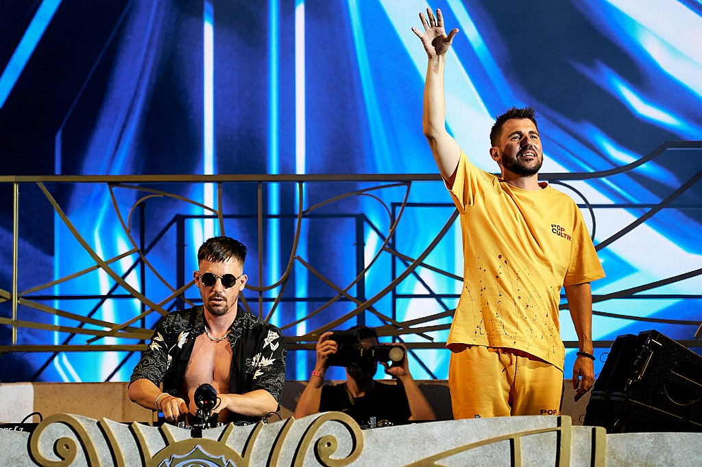
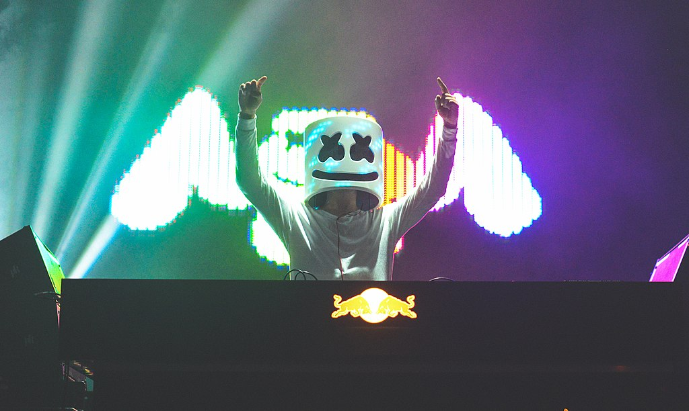

1 / 6

2 / 6

Dimitri Vegas & Like Mike
Dimitri Vegas and Like Mike are a Belgian DJ duo consisting of brothers Dimitri and Michael Thivaios. They started their career in the early 2000s and have since become one of the most successful acts in the electronic dance music scene. They have also won several awards, including the DJ Mag Top 100 DJs award in 2015 and 2019. Some of their most listened songs include: "Mammoth", "The Hum", "Tremor", "Complicated", and "When I Grow Up".3 / 6

Armin Van Buuren
Armin Van Buuren is a Dutch DJ, record producer, and remixer who is widely regarded as one of the greatest DJs of all time. He began his music career in the early 1990s and has since become a global phenomenon. He is known for his uplifting and progressive trance music, and has won numerous awards for his contributions to the electronic dance music scene. Some of his most listened songs include "This Is What It Feels Like" featuring Trevor Guthrie, "Blah Blah Blah," "In and Out of Love" featuring Sharon den Adel, and "Sunny Days" featuring Josh Cumbee.4 / 6

Martin Garrix
Martin Garrix is a Dutch DJ, record producer, and musician who became famous for his breakout hit "Animals" in 2013. He began his music career at a young age and has since become one of the most successful DJs in the world. Martin Garrix is known for his energetic and melodic style of music, which combines elements of progressive house, electro house, and pop. Some of his most listened songs include "Scared to be Lonely" featuring Dua Lipa, "There for You" featuring Troye Sivan, "Animals," and "Tremor" with Dimitri Vegas and Like Mike.5 / 6

Tiësto
Tiesto, is a Dutch DJ and record producer who started his music career in the early 1990s. He is considered one of the pioneers of trance music and has since expanded his musical style to include elements of electro house, progressive house, and pop. Tiesto has released several albums, including "In My Memory," "Elements of Life," and "A Town Called Paradise," and has collaborated with various artists such as Calvin Harris, Martin Garrix, and Dzeko. Some of his most listened songs include "Adagio for Strings," "Red Lights," "Jackie Chan" and "The Business".6 / 6
